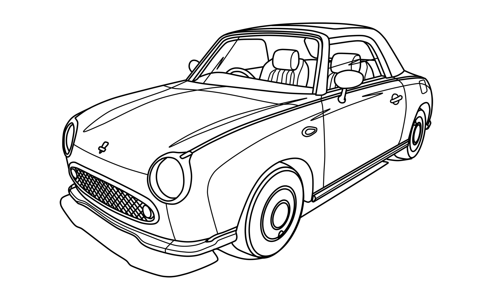

La colorización en Krita es un proceso creativo que permite a los artistas agregar color a sus ilustraciones de manera eficiente y detallada. Krita ofrece una variedad de herramientas y técnicas para facilitar este proceso, como capas de color, modos de fusión, y pinceles personalizados. Los artistas pueden utilizar capas de color para separar diferentes elementos de la ilustración, lo que facilita la edición y el ajuste del color sin afectar otras partes del dibujo. Además, los modos de fusión permiten mezclar colores de manera creativa, mientras que los pinceles personalizados ofrecen una amplia gama de texturas y efectos para lograr resultados únicos. En resumen, la colorización en Krita es una parte esencial del flujo de trabajo artístico que permite a los creadores dar vida a sus obras con vibrantes colores y detalles.

El proceso de colorización en Krita generalmente comienza con la creación de una ilustración en blanco y negro, conocida como línea de arte. A partir de ahí, los artistas pueden agregar capas de color debajo de la línea de arte para comenzar a aplicar colores base. Luego, se pueden utilizar técnicas como el sombreado y el resaltado para agregar profundidad y dimensión a la ilustración. Krita también permite a los artistas experimentar con diferentes paletas de colores y estilos para encontrar la combinación perfecta que se adapte a su visión artística. A medida que avanzan en el proceso, pueden ajustar la opacidad y el modo de fusión de las capas para lograr efectos específicos y mejorar la apariencia general de la obra.